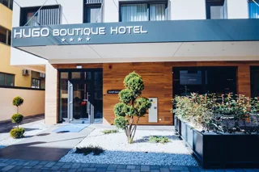
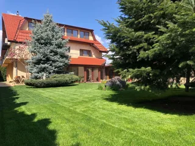
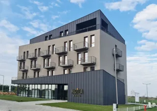
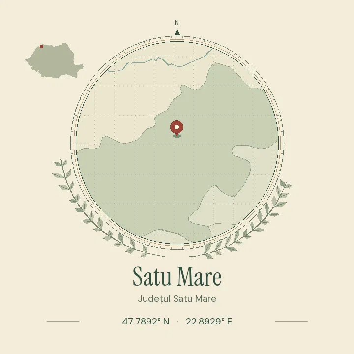
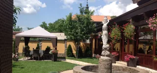
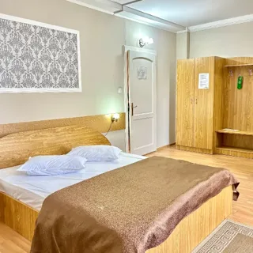

Locații de nuntă în Satu Mare
- locații în director
- 12
- cu cazare în registrul SITUR
- 6
- medie ponderată Google
- 4,3 / 5
- evaluări Google
- 4.152
Cum alegi o locație în Satu Mare
În Satu Mare poți începe comparația cu Hugo Boutique Hotel (cazare), Olimpia Residence District (hotel), Pensiunea Casa Irinella (bed & breakfast). Aceste proprietăți apar în primele poziții când luăm în calcul împreună nota și numărul de evaluări Google. Salvează adresele care vă interesează pentru a le așeza apoi alături în fișa de comparare a ofertelor.
În fișele proprietăților poți compara dotări concrete la Hugo Boutique Hotel (terasă, cazare, parcare gratuită), Olimpia Residence District (cazare). Pentru oferta de nuntă, întreabă ce spații și servicii dintre cele prezentate intră în rezervarea privată pentru data voastră.
Dacă vin rude de departe, Hugo Boutique Hotel are o unitate de cazare asociată în registrul SITUR. Înregistrarea pentru Hugo Boutique cuprinde 40 de locuri de dormit în 20 de spații de cazare. Întreabă câte camere pot fi păstrate pentru aceeași noapte înainte să trimiți invitaților detaliile de rezervare.
Dacă vrei să vezi două proprietăți în aceeași zi, poți continua de la Hotel Dana spre Pensiunea Sofia din Vetiș. Punctele lor sunt la 2,5 km în linie dreaptă. Deschide traseul înainte să fixezi ora celei de-a doua vizite, mai ales dacă grupul se deplasează cu autocarul.
Locații pentru vizionare
Ordinea ține cont de nota Google și de numărul evaluărilor. Cum calculăm ordinea

Fotografie a locației · Sursa fotografiei Satu Mare · Cazare
Hugo Boutique Hotel
Hugo Boutique Hotel, Satu Mare. După estimarea sa, încap aproximativ opt până la zece mașini, în funcție de dimensiuni și de cum sunt așezate.
Strada Petőfi Sándor 43, 440026 Satu Mare+40 770 669 387
Fotografie a locației · Sursa fotografiei Satu Mare · Hotel
Olimpia Residence District
Olimpia Residence District, Satu Mare. Un oaspete de la Olimpia Residence descrie camerele ca spațioase, cu mobilier modern.
Strada Lăcrămioarei 55, 440067 Satu Mare+40 753 016 180
Fotografie a locației · Sursa fotografiei Satu Mare · Bed & Breakfast
Pensiunea Casa Irinella
Pensiunea Casa Irinella, Satu Mare. În curtea Casei Irinella se intra cu un cod în timpul șederii descrise de un oaspete.
Strada Oașului 23, 440104 Satu Mare+40 722 694 541
Fotografie a locației · Sursa fotografiei Satu Mare · Hotel
Marida Hotel
Un client al restaurantului Marida a remarcat varietatea preparatelor pe care le putea comanda, de la rață pe varză și ceafă la grătar până la șnițel de vită.
Strada Gorunului 6, G, 440135 Satu Mare+40 745 804 068
Fotografie a locației · Sursa fotografiei Satu Mare · Hotel
CHARM Boutique Hotel
Hotel boutique pe Strada Clujului din Satu Mare, cu grădină și terasă; media e 4,7, dar recenziile din 2026 semnalează curățenie și recepție slabe.
Strada Clujului 46, 440020 Satu Mare+40 748 028 060
Fotografie a locației · Sursa fotografiei Satu Mare · Bed & Breakfast
Pensiunea Spune-mi O Poveste
Pensiunea Spune-mi O Poveste, Satu Mare. Aceste lucruri pot conta pentru părinți la fel de mult ca meniul sau durata petrecerii.
Strada Rândunelelor nr 1027, 447170 Satu Mare+40 770 750 021
Fotografie a locației · Sursa fotografiei Satu Mare · Hotel
City Hotel
La City Hotel, cineva descrie o unitate cu hol, o cameră cu paturi de o persoană și o cameră mai mare cu pat matrimonial.
Bulevardul Vasile Lucaciu 42, 447230 Satu Mare+40 261 877 870
Hartă ilustrată Satu Mare · Hotel
Complex Hanul lui Ionuț
Hotel de tranzit cu restaurant și parcare mare în curte, în Satu Mare; recenzii împărțite despre camere și curățenie, media 4,2.
Drumul Odoreului 46, 440105 Satu Mare+40 740 061 061
Hartă ilustrată Satu Mare · Pensiune
Vila Tineretului
La Vila Tineretului, unui oaspete i-au plăcut paturile și liniștea din jur, dar i-a fost cald noaptea și spune că în camera sa nu avea frigider.
Strada Tineretului 15, 440102 Satu Mare+40 753 661 384
Fotografie a locației · Sursa fotografiei Satu Mare · Hotel
Hotel Aramia
Hotel Aramia, Satu Mare. Un client la Aramia relatează că suma discutată înainte pentru cameră a diferit de cea cerută la sosire.
Strada Wolfenbüttel 9, 440058 Satu Mare+40 261 711 117
Fotografie a locației · Sursa fotografiei Satu Mare · Hotel
Hotel Restaurant Perla
Hotel Restaurant Perla. La Perla din Satu Mare, un client a reclamat în camera primită variații ale temperaturii apei la duș și lipsa unor produse de igienă.
Strada Liviu Rebreanu 26, 440055 Satu Mare+40 261 710 794
Fotografie a locației · Sursa fotografiei Satu Mare · Hotel
Hotel Dana
Hotel în Satu Mare cu piscină și bar non-stop, dar recenzii de o stea în 2026 și o nuntă cu mâncare criticată. Ce să verificați înainte.
Str. Careiului 128, 440187 Satu Mare+40 261 877 784
Întrebări despre locațiile din Satu Mare
Unde pot dormi invitații în Satu Mare?
În registrul de cazare SITUR găsim Hugo Boutique Hotel (40 de locuri de cazare), Marida Hotel (60 de locuri de cazare), City Hotel (78 de locuri de cazare). Verifică ce camere sunt libere pentru noaptea evenimentului.
Ce proprietăți din Satu Mare au grădină sau terasă?
Hugo Boutique Hotel (terasă); Pensiunea Casa Irinella (terasă); Marida Hotel (terasă). Cere administratorului condițiile de folosire pentru o petrecere privată.
Care locație din Satu Mare are cele mai multe evaluări Google?
Hotel Dana are 1.127 de evaluări în profilul Google folosit la documentare. Evaluările acoperă și alte experiențe la proprietate, inclusiv vizitele fără eveniment.
Ce alte localități pot include într-o vizionare lângă Satu Mare?
Cele mai apropiate adrese comparate pe hartă sunt în Vetiș, Berindan, Viile Satu Mare. Găsești mai jos distanțele dintre proprietățile folosite pentru această comparație.
Vizionări în apropiere
- Vetiș · 1 locație. Între Hotel Dana și Pensiunea Sofia sunt 2,5 km în linie dreaptă.
- Berindan · 1 locație. Între Pensiunea Casa Irinella și Pensiunea Amurg sunt 10,2 km în linie dreaptă.
- Viile Satu Mare · 2 locații. Între Vila Tineretului și Pensiunea Primăverii sunt 12,5 km în linie dreaptă.